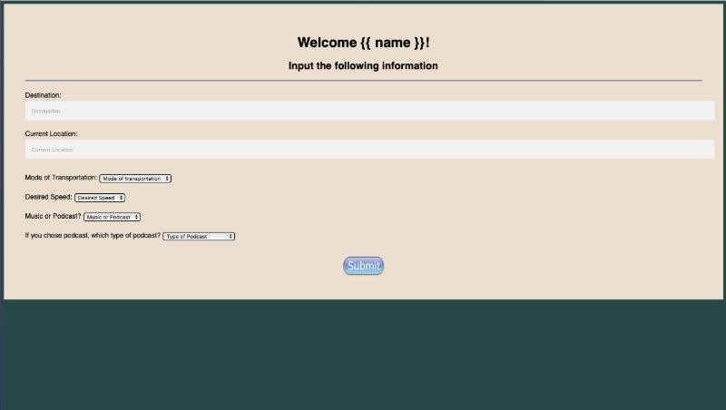
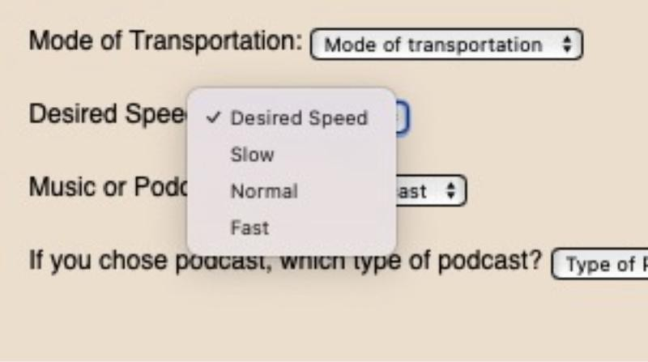
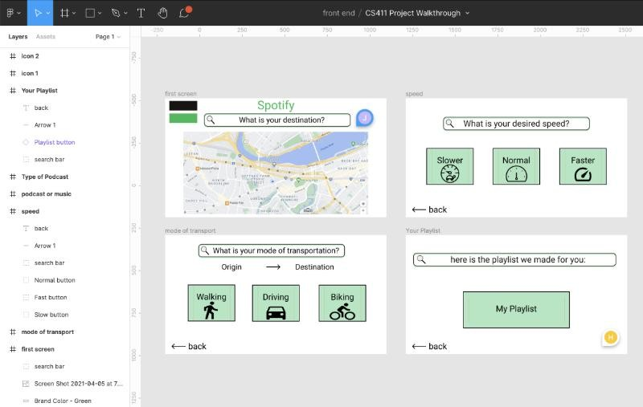
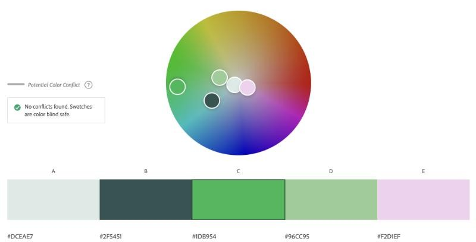

A web app that turns your trip into a Spotify playlist: sized to how long you’ll be traveling, built from your library, and matched to the weather.
Role
Front end and design, on a team project
Course
CS411, my final computer science course at Boston University
I learned
HTML, CSS and React, during the semester
Stack
React, Flask, Redis; Spotify, OpenWeatherMap and Google Maps APIs
The brief
A semester-long project with four technical requirements. My idea: a playlist that lasts exactly as long as your trip.
Good weather adds more upbeat, happy songs. Rain, snow, clouds or cold bring in mellower ones.
01 · First draft
I started with a basic page: “Welcome [name]”, then fields for destination, current location, mode of transport, desired speed, and music or podcast. A template page helped me understand layout before I designed anything.


02 · Sketching in Figma
In Figma I sketched what I had in mind: a destination search with a map, then one screen each for transport and speed, ending on the playlist.
Dropdowns for transport and speed became big buttons on their own screens. That cut clicks and made each choice obvious at a glance.

03 · Decisions
Origin to destination. I reordered the inputs to read logically, and we used Google Maps to work out the distance and trip time.
No podcasts. Episodes run from 5 minutes to 2 hours, while songs are 3–4 minutes. As BU students we tested trips on campus, and the longest took under 30 minutes, so songs fit far better. As a team we dropped podcasts and focused on song playlists.
04 · Visual design
Since the music comes from Spotify, I built the palette from its brand colors: white, green and dark grey. I checked the swatches in Adobe’s accessibility tool, which found no conflicts and confirmed they are color-blind safe.
For type I wanted something close to Spotify’s Gotham: clean, modern, fun and approachable. I chose Poppins, which is also the font on this site.

Poppins
Aa Bb Cc 0123 · clean, modern, approachable
05 · The final product
Users log in with Spotify, enter where they are and where they’re going, then pick how they’re getting there and how fast. The app builds a playlist that matches the trip length, from their own library and tuned to the weather: upbeat when it’s sunny and warm, mellow when it’s rainy, snowy or cold.
Under the hood
The full code for Playlist Maker is on GitHub.